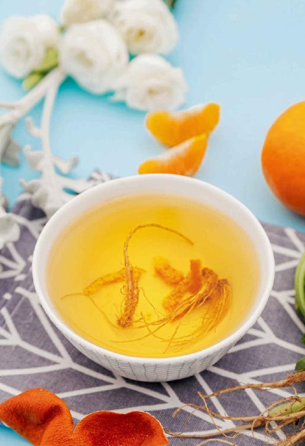
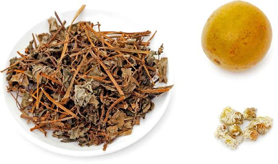
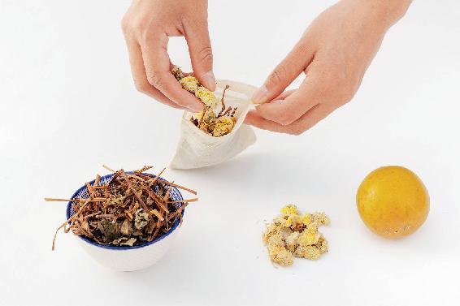
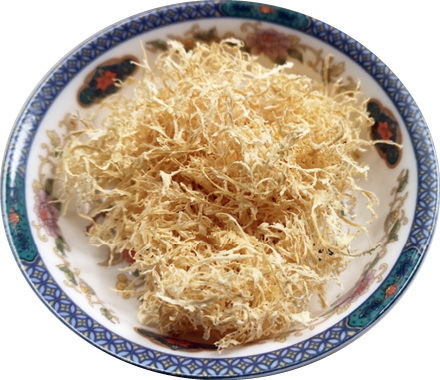
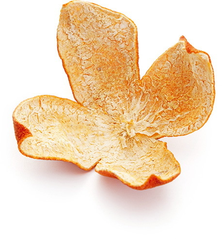
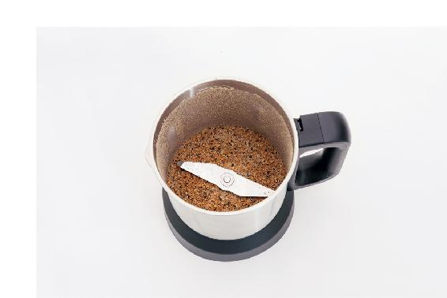
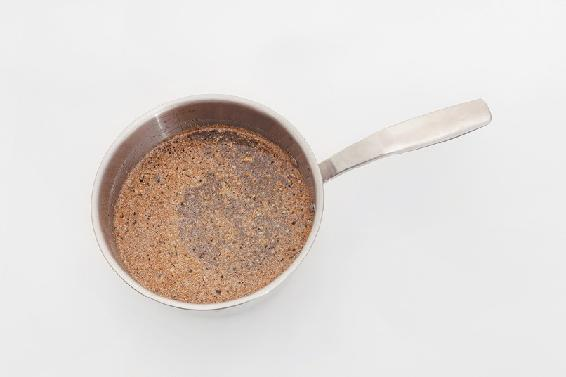

突然干咳、热咳，喝鱼腥草梨皮水
我们的肺是一个很娇气的内脏，它特别爱干净，哪怕沾上一点点脏东西，也一定要咳出来。
把孩子放在童车里出门压马路，孩子回家以后，往往会咳几声。这是因为在城市里越接近地面灰尘和污染物越多，孩子吸了脏东西在肺里，需要咳出来。空气污染时，或者刮风的天气，有些人出门回家也容易出现这种干咳。像这种咳嗽，千万别急着去止住它，否则容易引起炎症。本来是干咳，过几天就生出痰来了，严重的还可能引起肺炎。
可以用鱼腥草加梨皮煮水来调理。
鱼腥草梨皮水
【原料】
鱼腥草10〜30克、鲜梨2只。
【做法】
- 把鲜梨放在加面粉的清水中泡10分钟，清洗干净。
- 削下梨皮，与鱼腥草一起用沸水冲泡，闷10分钟后当茶饮用，有条件煮水更佳（冷水下锅，水开后煮1分钟，不要久煮）。
【功效】
- 调理吐黄痰的热性咳嗽。
- 清肺热，消炎，化痰止咳。
- 祛除面黄。
允斌点评
- 如果咳嗽痰多，不要急着止咳、润肺或吃补药，要消炎祛痰。痰清除干净了，自然就不咳嗽了。
- 没有梨皮，可以单用鱼腥草，多加些量，效果也不错。
读者评论
- 不知道此方之前，我还以为感冒后咳嗽一两个月是正常现象呢。喝了它才知道，对症用药，调理这种急症是可以立时见效的，特别神奇，我一开始都不敢相信。
——ggsinging
- 每次孩子咳嗽都比较厉害，痰也多，我就给他煮鱼腥草梨皮水，喝过一次就见效。从孩子不到1周岁遇到陈老师的书，到现在6周岁没去过医院。
——馨
- 用鱼腥草梨皮煮水治好了我们二宝的咳嗽，根本不用吃药。由此非常感恩陈老师，方子简单，功效强大。
——渡过
- 鱼腥草雪梨皮水特别好用，只要是咳嗽黄痰，喝上一剂准能好，特别管用。赞！
——陈巧莹
- 我女儿咳嗽得厉害，喝了两天鱼腥草梨水就好了，很是神奇！
——爱茉莉
- 喝一两天鱼腥草梨皮水，我就不咳了，也没绿痰了。
——紫苏
- 我孩子1岁半，每次咳嗽都会呼噜呼噜的，有痰，以前一般都要半个月才有好转。用了鱼腥草梨皮水后三天就不咳嗽了，根本不用吃任何药就好了。
——维一
- 孩子感冒咳嗽有一个月了，很是心急。这几天夜里也咳，去看了大夫，说是普通感冒，嗓子、肺部没有炎症之类的。晚上喝了鱼腥草、姜、葱头煮的水后，孩子说暖暖的很舒服。夜里不咳了，白天还是咳，我又用白萝卜皮和鱼腥草煮水，就煮了1分钟，喝了两次，晚上他说今天没咳嗽，鼻涕也没有了。
——14群读者
- 我儿子前几天咳嗽，本来喝萝卜梨皮水基本不咳了，五一回娘家没管住嘴又咳了，尤其入睡后咳得厉害。班长建议鱼腥草加梨皮煮水，晚饭后只喝了一杯，一晚上没咳；第二天又喝了两次，没再听见咳嗽了。不服不行啊！
——薇
- 小孩咳嗽，按照老师的方法鱼腥草加梨皮煮水给小孩喝，早上喝完去上课，中午回来没那么咳了。感恩老师。
——杜鹃
- 一个朋友干咳，嗓子不痒，咳得喘不上气，她自己说搞了下卫生就这样了。叫她喝鱼腥草梨皮水，当晚就没那么咳了，喝了几次就完全好了。
——12群读者
感冒后有时会留下咳嗽的“尾巴”，嗓子里有点痰，经常咳几声，不算严重，可又总不见好，这种情况就是“慢性咳嗽”。
芹根陈皮茶
【原料】
干香芹根3个、川陈皮1个。
【做法】
- 芹菜根切碎，陈皮掰成碎片。
- 放入杯中，冲入沸水，马上倒掉水。
- 再次冲入沸水，闷制20分钟后饮用。
【功效】
- 调理慢性咳嗽、晨起咽喉有痰。
- 化痰，祛湿，适合秋冬季日常保健饮用。
- 祛除男性长在下颌部位的痘痘。
- 早晨起来喉咙有痰，咳不出来也咽不下去，非常不舒服。喝了芹根陈皮茶后第二天，症状转好减轻，三天后喉咙就没有黏腻感了。
——乐易
- 芹根陈皮茶治疗咳嗽，我推荐好多人用过了。尤其是风寒感冒后留的小尾巴，用这个方子非常有效，经常一两天就不咳了。我经常还会在里面再放3片去皮生姜。
——Donna
- 我用过陈皮芹菜根，感觉非常好，帮助除陈寒，喝了之后排了很多寒痰出来，现在没那么怕冷了。
——高鑫
- 芹根陈皮茶对付喉咙里吐不出的黏痰很好。
——细雨轻愁
- 自从跟着老师养生，一双子女发烧咳嗽用蚕沙竹茹陈皮退烧方、鱼腥草梨皮水很快就好了，现在基本不用去医院了。感冒后有痰也是用芹根陈皮水，两天就好了。
——莉
- 孩子前几天有点咳，我也没管她，以为咳两天就会好，后来越来越厉害。发现他一上床睡觉就咳，白天比较轻一点。听老师分析应该是积食引起的咳嗽。给他煮了双皮水，喝了两次就好多了。可是刚好一点，他又吃了冷饮，又开始咳。不过白天咳得多一点了，我想应该是脾胃受寒了，就给他煮香芹根生姜加陈皮水。喝了两天，现在一点都不咳了。孩子高兴地说感谢陈老师的好方法，不然又要吃药了。
——自然而然-安徽
- 芹菜根陈皮水能治下巴痘痘，基本上喝两天就见效果了。
——钱艳丽

患慢性咳嗽的人，如果有肺热，痰有点黄，可以喝这个茶饮来清痰消炎。
果菊清饮
【原料】
鱼腥草15～30克、菊花3克、罗汉果1个。
【做法】
将罗汉果压破，和鱼腥草、菊花一起分成三份，每次取一份放保温杯闷泡30分钟后饮用，一日三次。
【功效】
1.消炎，排毒，清肺热。
2.调理慢性咳嗽、黄痰。
3.预防青春痘。


- 推荐鱼腥草罗汉果治咽炎的方子。没有了咽炎，感觉好多东西可以吃了，因为咽炎、鼻炎引起的感冒也少了。身边好多朋友都来问我方子，我觉得帮到了大家很开心。
——向海的太阳
- 我老公经常抽烟，时不时会咳几声，自从喝了鱼腥草罗汉果茶之后，咳得越来越少了。感恩老师奉献出这么好的方子。
——阿红
- 感冒发烧咳嗽，嗓子痛得厉害，喝了两天竟然好了。
——雯雯
- 清热、止咳效果好，关键是好喝！
——钱淑荷
- 果菊清饮效果特别好，不容易感冒了。
——大红苹果
- 早上起床嗓子痛，自己分析可能是昨天中暑了，赶紧煮鱼腥草罗汉果菊花茶，上午喝了两杯，下午嗓子不疼了，真是神奇。感恩陈老师。
——冯宝霞
- 之前喉咙就有那么一点上火，又吃了一些新鲜荔枝，前天一起床，整个喉咙着火一样，又肿又痛。我马上把整个罗汉果捏碎煮25分钟，再加1大把鱼腥草、1小把胎菊继续煮水20分钟，喝了两天，基本痊愈了，只有一点点尾巴了，今天继续煮上。老师的方子真好，要平时老早抓药去了。
——5群读者
- 今年冬天咽炎特别严重，嗓子老有痰，在办公室老吐痰，自己都觉得不好意思。昨天上午喝了一杯，感觉太甜了下午没喝，到晚上神奇地发现嗓子没有痰了。今天上午又喝了，嗓子很舒服，没有痰的感觉真好。
——小丽
- 因天气热运动出汗了，晚上睡觉喉咙感觉有一点不舒服，不是特别痛。第二天一早有点鼻涕了，立马煮了罗汉果鱼腥草菊花饮，到了晚上喉咙痛控制住了，鼻涕也不是很多了！
——丝LDJF
- 因为家里没有单独的罗汉果和乌梅，我就直接用焖烧杯泡了一杯果菊清饮。晚上还有点打喷嚏、鼻塞，睡前又喝了一杯，今早起来感冒症状缓解了很多，肌肉酸痛乏力感也消失了。仍然有轻微鼻塞，眼睛也有点不舒服的感觉。昨天的果菊清饮，今天继续泡着喝。
——39群双儿
- 昨天上午喝姜枣茶，下午喝了果菊饮，上火的症状在持续减轻，溃疡完全不疼了，舌苔也薄了些。今天继续喝姜枣茶，还煮了罗汉果进去。
——happy_beans
- 我前天晚上吃了辣的，睡前喉咙痛。昨天早上睡醒，全身酸痛，怕冷，有点低烧，精神不好，喉咙好多痰是黄色的。马上煲一壶罗汉果冲鱼腥草水喝了一整天，今天起床精神好了，身上也不酸痛了，喉咙还是有一点点痛。又煲了一壶果菊饮，下午喉咙不痛了。每次低烧喉咙痛都是煲鱼腥草水喝两天自然好了。感恩陈老师的食疗方！
——14群读者
- 小孩喉咙痛有痰难咳出来，喝了果菊清饮后症状减轻。
——莫金双
- 上周一二的时候，觉得喉咙有点不太舒服，隐隐感觉有痰，打了几个喷嚏。周三晚上喉咙开始沙哑，睡觉前就很痛了，咽口水都痛。因为下班回家很晚，还要哄娃睡觉，我没有吃任何东西。第二天泡了果菊清饮，觉得有好转。我知道自己湿气很重，接下来几天，我基本天天喝果菊清饮，隔天喝瓜皮荷叶茶，还经常焖煮薏米、赤小豆吃。就这样一周过去，现在基本好了，只有一点点痰。打算明天吃活捉芫荽，看看能不能去根。以往喉咙发作，最起码两三个星期才好，这次好得很快，非常开心。
——29群读者
- 周五我家宝从学校回来，到家已经晚上10点多了，还感冒了，打喷嚏，流鼻水，就煮了姜葱陈皮水给他喝，喝完就睡觉了。周六早上起来，鼻塞，流浓鼻涕，说话带鼻音，于是煮了一锅（1 500毫升）果菊清饮，让他喝了一天。白天说舒服多了，晚上又流鼻水，于是又喝了一次姜葱陈皮水。周日早上，听他说话感觉好了大半，但喉咙还有点痛，可能是晚上喝的姜葱陈皮水中姜用多了，于是煮了牛蒡茶给他喝，感觉喉咙舒服多了，也就喝了600毫升左右便回校了。今天打电话回来，说喉咙不痛了，但还有点痰。我问他有没有继续泡果菊清饮或牛蒡茶，他说有用保温杯泡果菊清饮。效果期待中。
——9群读者
- 前段时间不知是不是吃银耳红枣羹太久的原因，我跟我老公都湿气很重，下焦湿、热、痒，脚也痒，让我帮他买药来擦。我故意不去，每天坚持用花椒水给他泡脚，还喝了几天果菊清饮，这两天终于消停了。上次他咳嗽也用老师的方子，罗汉果和柿蒂煮水喝。我现在煮的养藏汤每天早上不用叫他，他自己就起来喝了。跟着老师顺时生活真的要坚持。
——大潘—广西
- 我妈妈感冒后一直咳嗽，有黄痰，痰很浓、很黏，难吐出来。我给她买了果菊饮，连续喝了两个星期，昨天打电话问她，她说好啦，黄痰没有啦，感觉干净了。
——5群读者
- 昨天可能吃白糖拌冬瓜过量了，睡觉时脑袋疼起来了，钻心地疼，坐卧不安，就把干品鱼腥草含在嘴里，没有缓解。又用自家盆里的鲜鱼腥榨汁喝，还是脑袋疼得快炸了。有个群友分享，用罗汉果加一大把鱼腥草和几朵菊花煮水喝。赶紧煮来喝下一杯，一会儿就感觉对症了，立马轻松不疼了，一觉睡到大天亮。
——27群读者
- 一个电饭煲煮罗汉果，另一个电饭煲泡鱼腥草和菊花，太耗时间了，但调理小便黄的问题效果很好，明天继续喝起来。
——清
- 喝了一个多星期的果菊饮，肚子瘦了呢。
——29群读者
- 果菊饮我天天喝，最近身体最大的改善就是不便溏了，开心！
——29群读者
- 出差几天回来有些劳累，喝了两天果菊清饮感觉好多了，再坚持喝几天巩固一下！
——29群读者
慢性咳嗽、痰多，调理时要根据颜色来分寒热。颜色黄是热痰，颜色白是寒痰。如果痰色一直是白的，可以喝陈皮橘络茶。
“久病入络”，长期咳嗽有痰，说明络脉必有痰湿。络脉非常细小，难以疏通，而橘络就有这个疏通络脉的能力，能助力陈皮化痰止咳。
陈皮橘络茶
【原料】
川陈皮1个、橘络3克。
【做法】
沸水冲泡，有条件煮水更佳。


- 橘络是橘皮里面白色的筋络，由于又少又轻，市面上的橘络多数混杂着大量橘白，这种效果不佳。
- 可以在吃红橘时自己收集橘络保存。家里保存的陈皮，每年晒制时掉下来的白色渣渣，就是橘络的碎屑，把它们留下来也可以用。
案例：读者经验
我侄女咳嗽近一个月，早晨有白痰，吃了药也不好。到医院去拍胸片、做CT等检查花了不少钱，结果就是有炎症。我叫她（去药店）买陈皮橘络泡水喝，喝了几天有一点点效果，还是咳。我就把我家自制的川陈皮和橘络给了她一包。三天后，她打电话告诉我咳嗽已基本痊愈，痰没有了，非常感谢；还说她也要跟着陈老师学养生，自己赶紧去买川红橘来做陈皮和橘络，这东西太珍贵了。
——17群读者
- 橘络陈皮茶，效果杠杠的！我老爸每次来我这里，我就听见他一直吐痰，这次我就抓了一小把自己撕的川红橘橘络，再加上陈皮泡水。早上他连喝了4杯，下午就跟我说好像痰少了很多，几乎不吐痰了。
——3群读者
- 小孩有痰咳嗽，煮了橘络陈皮水给她喝，喝了就感觉没什么痰了，厉害。
——6群读者
- 咳嗽四五年，有白痰，喝橘络陈皮茶，现在好了。
——读者朋友
- 我在风寒感冒后，咳嗽有痰，后来就一连喝了五天的陈皮橘络茶。现在没有咳嗽了，痰也没有了，方子真灵！
——读者朋友
- 这款（橘络陈皮）茶我喝过，之前白痰比较多，喝了一周情况好转；坚持了一个月，完全好了。
——读者朋友
- 每年三四月每天都吐白痰，喝了不少姜水，立夏期间喝姜枣茶，白痰也没改善。我就开始喝陈皮橘络茶，一周左右白痰明显减少了。如果出汗吹风了，白痰会卷土重来，喝陈皮橘络茶，立马见效！
——读者朋友
- 陈皮橘络茶喝了两天，完全不咳了，白痰也基本没有了，真有效！
——5群读者
- 我爸妈前一段时间经常咳嗽，雾霾天出去也不喜欢戴口罩。前几天川红橘到货后，赶快剥了橘络给爸妈送去，让她把橘络和陈皮一起煮水喝。喝了大概三天，刚打电话说，已经不咳了。
——6群读者
有的朋友从冬天咳到春天，一直都不好，这多半就是有慢性支气管炎了。
在家里的饮食上怎么来调理支气管炎呢？可以喝一道西瓜子清肺饮。
西瓜子是化痰的。这道小茶方，每天喝三次，一个星期左右就能感觉身体舒服多了。
西瓜子清肺饮
【原料】
西瓜子500克、蜂蜜适量。
【做法】
- 把西瓜子加清水用料理机打碎。
- 下锅煮开，转小火煮2个小时，直到汤汁变浓关火起锅。
- 用纱布过滤出汁，加入蜂蜜，放冰箱冷藏，可以放一个星期。
- 每次取半杯放入随身杯，加入开水饮用。
【功效】
- 调理慢性支气管炎。
- 清肺化痰。


西瓜子的壳和仁都有药性，整个打碎就可以，不用剥壳。